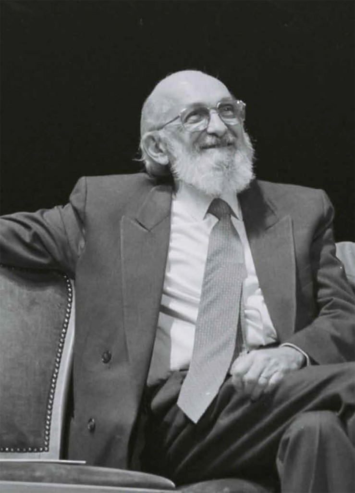
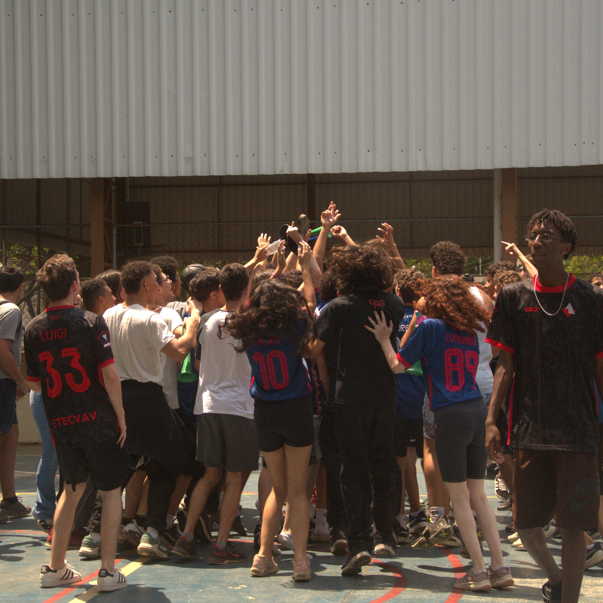
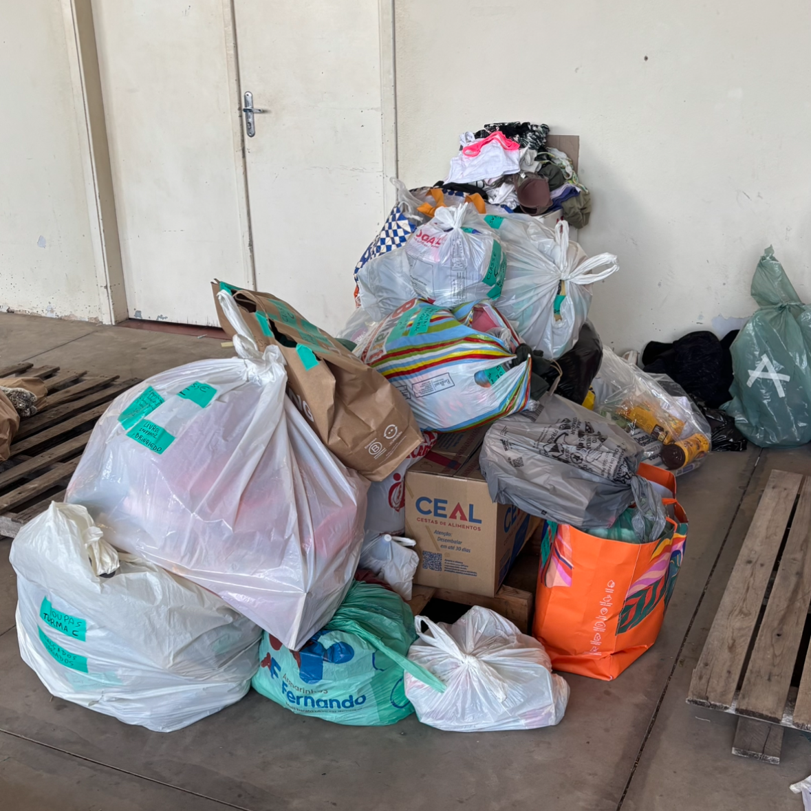
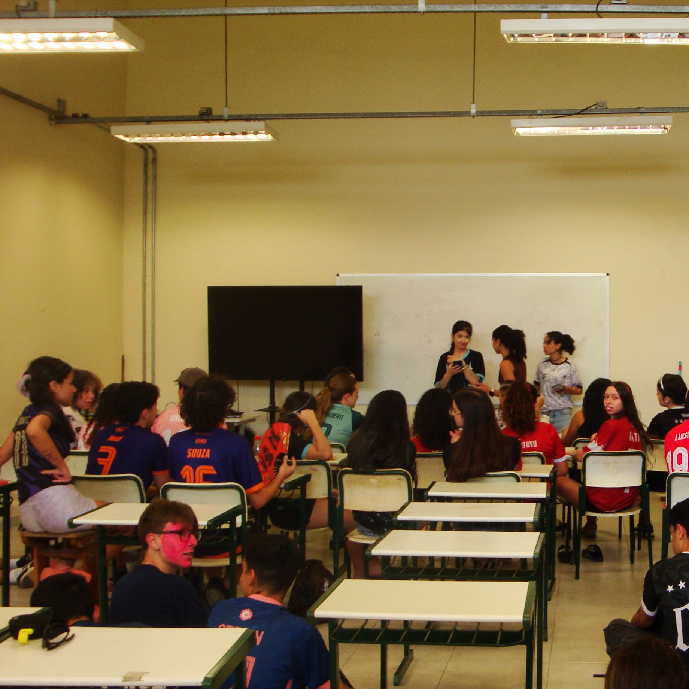

Celebrando a educação crítica e participativa inspirada por Paulo Freire
Saiba maisPaulo Freire (1921–1997) foi um educador brasileiro conhecido mundialmente por suas ideias sobre educação libertadora, pedagogia crítica e alfabetização de adultos. Seu trabalho transformou a forma de ensinar e valorizar a participação ativa dos alunos.
Ver mais
A Semana Paulo Freire é realizada nas escolas para refletir sobre a educação crítica e cidadã, destacando os princípios pedagógicos do educador e promovendo atividades que incentivem a participação, o debate e a conscientização dos alunos.

Atividades esportivas como futebol, vôlei e basquete para integração e diversão dos alunos.

Arrecadação de alimentos, roupas e materiais que são destinados a pessoas necessitadas durante a semana.

Competições de jogos como Valorant e FIFA, estimulando o espírito de equipe e entretenimento saudável.